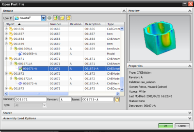

Teamcenter Integration 提供对 Teamcenter for Simulation 数据模型的支持。Teamcenter for Simulation 是 Teamcenter 的一种打包式解决方案，使您可以跟踪和管理有限元分析数据。
使用此数据模型和数据集，您可以：
跟踪 FEM 和仿真文件的零组件版本。在创建新的 FEM 或仿真时指定编号和版本。
对锁定的主模型部件创建 FEM 和仿真。
对 Teamcenter 中的仿真数据执行参考位置查询。例如，可以查找为特定主模型部件定义的所有仿真。
创建 CAE 数据零组件版本，并在 Teamcenter 客户端通过 CAE 管理器编辑 CAE 数据关系
